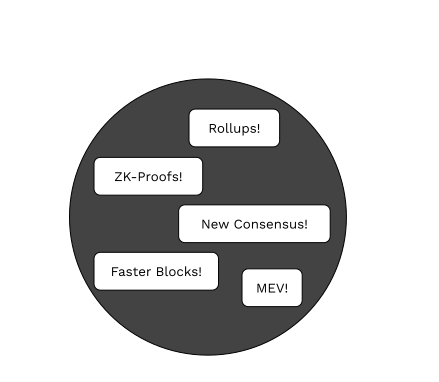
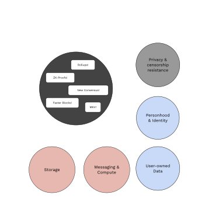
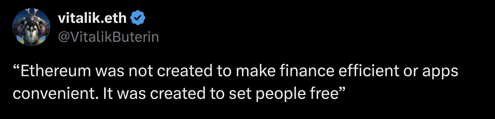

<!DOCTYPE html>
<html lang="en">

<head>
  <meta charset="utf-8" />
  <meta name="viewport" content="width=device-width, initial-scale=1.0, maximum-scale=1.0, user-scalable=no" />

  <title>What is a Blockchain, Actually?</title>
  <link rel="icon" href="./../../assets/favicon.svg" />
  <link rel="shortcut icon" href="./../../assets/favicon.png" />
  <link rel="stylesheet" href="./../../dist/reset.css" />
  <link rel="stylesheet" href="./../../dist/reveal.css" />
  <link rel="stylesheet" href="./../.././assets/styles/PBA-theme.css" id="theme" />
  <link rel="stylesheet" href="./../../css/highlight/shades-of-purple.css" />

  <link rel="stylesheet" href="./../.././assets/styles/custom-classes.css" />

</head>

<body class="site">
  <footer style="position: fixed; top: 1.5%; left: 2%; z-index: 99;">
    <a href="./../../index.html">
      
    </a>
  </footer>
  <main class="reveal">
    <article class="slides">
      <section  data-markdown><script type="text/template">

<!-- .slide: data-background-image="../../assets/img/0-Shared/bg/PBA_Background.png" data-background-size="cover" -->
## What is a Blockchain, Actually?

* `@kianenigma`
* kianenigma.com
</script></section><section ><section data-markdown><script type="text/template">
## Prelude: Why My Bank Failed

<aside class="notes"><p>Let&#39;s start with a thought experiment.
I want to start a bank, a wonderful new bank that doesn&#39;t loan your money out to anyone else
It is all digital, no cash
Simple interface: Send money to this IBAN, I keep it safe, when you request to withdraw, I will give it back to you
Nobody trusted me
I decided to open-source my entire code-base
Nada
Have it be audited, used the best tools to make it secure
I even rewrote the whole thing in Rust
I even ran it in a TEE, attested that it doing the right thing, nada</p>
<p>But then, I legalized my bank, declared it to local regulators of my country, and put into place where if I misbehave, the local police and courts could come after me, or at least I pretended to do so</p>
<p>And suddenly nobody even cared what my code is.</p>
<p>Truthfully, this is how all of the banks that you currently use work.</p>
<p>Nobody even knows what they do under the hood, just the possibility that they might get caught is enough.</p>
<p>Strong social institutions that enforce rules</p>
</aside></script></section><section data-markdown><script type="text/template">
## Lack of Trust $\Rightarrow$ Authority

* Particularly exacerbated in the interconnected world we live in today
* Bank: One form of authority to manage our money
</script></section><section data-markdown><script type="text/template">
## Your Bank


<br>

> Human-based Authority / Trust
</script></section><section data-markdown><script type="text/template">
## Bitcoin


<br>

> Science/Technology-based Authority / Trust

<aside class="notes"><p>My failed bank was a poor man&#39;s attempt at creating this science-based trust.</p>
</aside></script></section><section data-markdown><script type="text/template">
## Why Bother?

* Human-based authorities: <!-- .element: class="fragment" -->
	* Corruptible
	* Limited
	* Not auditable
* Science-based authorities: <!-- .element: class="fragment" -->
	* Verifiable
	* Accessible
	* Auditable
</script></section><section data-markdown><script type="text/template">
## Why Bother?

> absolute power corrupts absolutely
</script></section><section data-markdown><script type="text/template">
## Revolution

* Bitcoin proved that, while my bank failed, it is in principle possible
* Trillions of dollars are entrusted today with this type of technology
* I can, in fact, with a few clicks, launch an ERC20 token and "run my own bank"

<aside class="notes"><p>Commoditization of creation of digital authorities</p>
</aside></script></section><section data-markdown><script type="text/template">
## Not Just Banks

$\Rightarrow$ Contentious Social Interactions $\Leftarrow$

And more..

<aside class="notes"><ul>
<li>Land Registry</li>
<li>Prediction markets</li>
<li>Petitions / Donations</li>
<li>Fundraising</li>
<li>Freelancing and tipping (gitcoin)</li>
<li>Gaming and game economies</li>
<li>Lending compute and storage</li>
</ul>
<p>And more, though for now it seems that the best use-case for blockchains is for social, and value-bearing interactions</p>
</aside></script></section><section data-markdown><script type="text/template">
## Web3

* This revolution of creating systems with less/no human-based trust/authorities, and more science-based trust/authorities..
* When applied to the world-wide web Is what I call **Web3**
</script></section><section data-markdown><script type="text/template">
## Decentralized Applications (DApps)

* Applications built with Web3 philosophy in mind are often called Decentralized Applications
</script></section><section data-markdown><script type="text/template">
## Trustless

* A system devoid of human-based trust/authorities..
* and enriched with science-based trust/authorities
</script></section></section><section ><section data-markdown><script type="text/template">
## Blockchain-based Authorities

<aside class="notes"><p>So we established that we lack trust in the modern interconnected world, and therefore we need authorities to manage our interactions
How can we model these blockchains and authorities</p>
</aside></script></section><section data-markdown><script type="text/template">
## Decomposing an Authority

* Rules
* State
* Mutations based on user inputs and rules

<br>

* We can be 100% sure that the rules are respected 🪄
</script></section><section data-markdown><script type="text/template">
## Model 1: Function

$$
F:(state, inputs) \rightarrow state'
$$

* We can be 100% sure $F$ is executed correctly and all states are correct 🪄
</script></section><section data-markdown><script type="text/template">
## Model 2: State Machine

<diagram class="mermaid">
%%{init: {'theme': 'dark', 'themeVariables': { 'darkMode': true }}}%%
graph LR
    y((y)) -->|"F(y, input-1)"| yp(("y′")) -->|"F(y′, ...)"| ypp(("y″"))
</diagram>

* We can be 100% sure $F$ is executed correctly and all states are correct 🪄
</script></section><section data-markdown><script type="text/template">
## Model 3: (Trustless) Computer

* Code (rules)
* Memory (state)
* Execution of user inputs (mutations)

<br>

* We can be 100% sure the computer's code is executed correctly and all memories are correct 🪄

<aside class="notes"><p>Here we can connect this to my failed bank -- this computer is what my bank needed!</p>
</aside></script></section><section data-markdown><script type="text/template">
## Bitcoin As an Authority:

* Rules: Valid transfer of BTC (based on UTXO model)
* State: How much BTC each person has
* Mutations:
	* Transfer of BTC between people, always signed by the `sk` sender
	* Bundled as a block of transactions
</script></section><section data-markdown><script type="text/template">
## Sphere of Influence

* Bank of Portugal cannot confiscate the money I own in Singapore
* Each authority has a sphere of influence <!-- .element: class="fragment" -->
* For blockchain-based authorities, this is the their state <!-- .element: class="fragment" -->
</script></section><section data-markdown><script type="text/template">
## Sphere of Influence


<diagram class="mermaid">
%%{init: {'theme': 'dark', 'themeVariables': { 'darkMode': true }}}%%
graph LR
    Authority -->|"Read"| State("Sphere of Influence (State)")
    Authority -->|"Write"| State("Sphere of Influence (State)")
</diagram>
</script></section><section data-markdown><script type="text/template">
## Sphere of Influence

* Bitcoin's code/rules can freely:
	* Read how much BTC I have
	* Perform a valid transfer of BTC (**law enforcement!**)
</script></section><section data-markdown><script type="text/template">
## The Real-World-Asset (RWA) Scam

* No blockchain can assert if:
	* I own a piece of gold
	* Force me to sell it to someone else
</script></section><section data-markdown><script type="text/template">
## The Real-World-Asset (RWA) Scam

* Oracle Problem
* Chains of Trust
	* Weakest Link Problem! <!-- .element: class="fragment" -->
	* Bridges are the same <!-- .element: class="fragment" -->
</script></section><section data-markdown><script type="text/template">
## The Real-World-Asset (RWA) Scam

<diagram class="mermaid">
%%{init: {'theme': 'dark', 'themeVariables': { 'darkMode': true }}}%%
graph LR
    subgraph "sphere of influence 🔐 "
		BlockchainAuthority["Blockchain Authority"]
        State(["State"])
    end
    Oracle["Oracle"]
    Oracle -- "trust me bro ⛓️‍💥" --> State
</diagram>
</script></section><section data-markdown><script type="text/template">
## Is It Really a Scam?

1. Science-based trust can be a spectrum 🤔
2. Blockchain-based authorities have multiple benefits, we chose a subset in such systems
</script></section></section><section ><section data-markdown><script type="text/template">
## 3 Properties

* Verifiable Execution of Rules
* Correct Ordering of all events, and re-auditing of past events
* Accessible to all

<br>

> Trustless compute and storage under consensus

<aside class="notes"><ol>
<li>As said before, blockchains bring about this property, where they provide guarantees that the whole system as a whole is correctly following its rules correctly.<ul>
<li>Current latest state of the blockchain is correct</li>
</ul>
</li>
<li>Besides this, it collects and retains evidence about what the exact order of all past events where that lead to current state<ul>
<li>And what the exact order of past events were that led to current state</li>
</ul>
</li>
<li>Ideally, it is accessible to all, as long as they meet the rules of the system<ul>
<li>Ethereum doesn&#39;t let you transact with it if you don&#39;t pay for gas</li>
</ul>
</li>
</ol>
</aside></script></section><section data-markdown><script type="text/template">
## RWA: Not a Scam, But..

* 2 out of 3 properties are fully met
* Same as consortium blockchains <!-- .element: class="fragment" -->


<aside class="notes"><ul>
<li>My address owning 1 BTC</li>
<li>My address owning 1000$ worth of some RWA</li>
</ul>
<p>Verifiability is partial, rest is met</p>
<p>Ethereum can never excert with the same degree of confidence that you won a tokenized house on the Ethereum network, than that of owning ETH on the network.
But Auditability, and accessibility are fully met.</p>
</aside></script></section></section><section  data-markdown><script type="text/template">
## Blockchains 101

* Blockchains merely help with retaining correct ordering of past events
	* Verifiability, the main magic of these systems? <!-- .element: class="fragment" -->
	* No! ZK-Proofs, TEE <!-- .element: class="fragment" -->
* Blockchains are overrated <!-- .element: class="fragment" -->
	* Blockchain-based systems! != not just a blockchain <!-- .element: class="fragment" -->

<aside class="notes"><p>Okay, enough with theoretical stuff, let&#39;s learn a bit more concretely about blockchains</p>
<p>Authoring:
Blockchains are a network of nodes, each running some software, called the &quot;blockchain node software&quot;
None of these nodes trust each other, yet they all encode within themselves the rules of the blockchain
They each also hold their local copy of the blockchain&#39;s state
Users send their transactions (instructions) to different nodes, and nodes may gossip them to one another
Every now and then, one of these nodes, based on the rules of the blockchain is eligible to author a new block
Block author will create a new block, updates its local state, and send the block + an attestation of what the new state should be to other nodes
All other nodes verify that the rules were respected, with their local copy of the state and the node software
Repeat</p>
<p>Genesis and Syncing:
Each node retains all of the previous blocks, such that it can always re-execute them, and re-verify all of the intermediary states</p>
<p>Alliances:
Sometimes, bank of Singapore might give limited (or full) access to Bank of Portugal to interact with it
Blockchains can do the same, and exchange messages, and in turn let other blockchains influence their state
This is called bridges, and when blockchains connect to one another.</p>
<p>Conclusion:
I have not really talked about how blockchains work, but if you even look at that, you will soon see that in systems that we as a whole call blockchains, blockchain is just one of the many components, and it only brings about 1 of the 3 properties: Ordering and auditable history of events.</p>
</aside></script></section><section  data-markdown><script type="text/template">
## Evolution of Blockchains

As trustless compute and storage providers.

* Fixed Code (Bitcoin)
* Smart Contracts (Ethereum L1) <!-- .element: class="fragment" -->
* Rollups (Polkadot, Layer 2s, etc) <!-- .element: class="fragment" -->
* JAM (Supercomputer) <!-- .element: class="fragment" -->

<aside class="notes"><ol>
<li>Bitcoin, fixed state-transition-function</li>
<li>Ethereum: programmable state-transition-function</li>
<li>Polkadot: programmable state-transition-function, allowing multiple blockchains to coexist and interoperate</li>
<li>JAM: blockchain-based super-computer, running arbitrary code with much higher degree of flexibility</li>
</ol>
</aside></script></section><section ><section data-markdown><script type="text/template">
## The Bigger Picture

* (2013) Bitcoin was a proof of concept that it is possible to establish trustless compute and storage under consensus
* (2016) Ethereum was a proof of concept that this can be generalized
</script></section><section data-markdown><script type="text/template">
## The Bigger Picture

* Next decade (2016 - today):
	* Scaling the existing system (not expanding the horizon)
	* DeFi (PMF - money to be made)
	* Noise

</script></section><section data-markdown><script type="text/template">
## The Bigger Picture


</script></section><section data-markdown><script type="text/template">
## The Bigger Picture

*Invention vs. Innovation*




<aside class="notes"><p>Making cars faster vs. Learning how to fly</p>
<p>I am glad to see that Polkadot, while it innovated on scaling a lot, it also invented a lot of new paradigms:</p>
<ul>
<li>Layer 2s</li>
<li>PVM and forkless upgrades</li>
<li>Today: storage, privacy, personhood, etc.</li>
</ul>
</aside></script></section><section data-markdown><script type="text/template">
## The Bigger Picture

* Trustless (expensive!) computation and storage under consensus is not everything!
* What went missing:
	* computation and messaging outside of consensus
	* Storage
	* Privacy
	* Identity and personhood
	* ...
</script></section><section data-markdown><script type="text/template">
## The Bigger Picture


<aside class="notes"><p>More examples in <a href="https://blog.kianenigma.com/what-blockchain-actually/Content/What/The-Bigger-Picture">https://blog.kianenigma.com/what-blockchain-actually/Content/What/The-Bigger-Picture</a></p>
</aside></script></section><section data-markdown><script type="text/template">
## The Bigger Picture

The challenge for the next decade:


<aside class="notes"><p>These components received some attention throughout the last decade, but not with the same degree of success or investment.</p>
<p>Next decade of blockchain development is a challenge to either:</p>
<ul>
<li>Solve the above problems, expand blockchain systems to the broader Web3 mission</li>
<li>Admit defeat, and let it all be a new financial system, which is ever more being integrated into the existing one, rather than replacing it.</li>
</ul>
</aside></script></section><section data-markdown><script type="text/template">
## The Bigger Picture



<aside class="notes"><p><a href="https://x.com/VitalikButerin/status/2008174642066845778">https://x.com/VitalikButerin/status/2008174642066845778</a></p>
</aside></script></section></section><section  data-markdown><script type="text/template">
## How To Think About Web3 Applications

<aside class="notes"><p>Look into your list of applications, websites, and serviced that you use, and ask yourself:</p>
<ul>
<li>In which ones I am interacting with other people over a contentious matter, and the platform is acting as an intermediary to establish that trust?</li>
<li>In which ones I am revealing more data about myself than I should to the intermediary?</li>
<li>In which ones the platform has an outsized control over the network and user-data, and can form a monopoly over it? Or it would be catastrophic if it decided to abuse it?</li>
</ul>
<p>Recent example that I have been thinking about:</p>
<ul>
<li>ClassPass</li>
<li>Self-guaranteeing promise</li>
</ul>
</aside></script></section><section  data-markdown><script type="text/template">
## Questions?


(Full text of the presentation)

</script></section>
    </article>
  </main>

  <script src="./../../dist/reveal.js"></script>

  <script src="./../../plugin/markdown/markdown.js"></script>
  <script src="./../../plugin/highlight/highlight.js"></script>
  <script src="./../../plugin/zoom/zoom.js"></script>
  <script src="./../../plugin/notes/notes.js"></script>
  <script src="./../../plugin/math/math.js"></script>

  <script src="./../../assets/plugin/mermaid.js"></script>
  <script src="./../../assets/plugin/mermaid-theme.js"></script>

  <script src="./../../assets/plugin/chart/chart.js"></script>
  <script src="./../../assets/plugin/chart/chart.min.js"></script>

  <script src="./../../assets/plugin/tailwindcss.min.js"></script>

  <script>
    function extend() {
      var target = {};
      for (var i = 0; i < arguments.length; i++) {
        var source = arguments[i];
        for (var key in source) {
          if (source.hasOwnProperty(key)) {
            target[key] = source[key];
          }
        }
      }
      return target;
    }

    // default options to init reveal.js
    var defaultOptions = {
      controls: true,
      progress: true,
      history: true,
      center: true,
      transition: 'default', // none/fade/slide/convex/concave/zoom
      slideNumber: true,
      mermaid: {
        startOnLoad: false,
        logLevel: 3,
        theme: 'base',
        themeVariables: {
          primaryColor: purple,
          primaryTextColor: white,
          primaryBorderColor: pink,
          lineColor: pink,
          secondaryColor: lightPurple,
          tertiaryColor: lightPurple,
        },
      },
      chart: {
        defaults: {
          color: 'lightgray', // color of labels
          scale: {
            beginAtZero: true,
            ticks: { stepSize: 1 },
            grid: { color: "lightgray" }, // color of grid lines
          },
        },
        line: { borderColor: ["#ccc", "#FFFFFF", "#888888"], "borderDash": [[5, 10], [0, 0]] },
        bar: { backgroundColor: ["#ccc", "#FFFFFF", "#888888"] },
      },
      plugins: [
        RevealMarkdown,
        RevealHighlight,
        RevealZoom,
        RevealNotes,
        RevealMath,
        RevealMermaid,
        RevealChart
      ]
    };

    // options from URL query string
    var queryOptions = Reveal().getQueryHash() || {};

    var options = extend(defaultOptions, {"width":1400,"height":900,"margin":0,"minScale":0.2,"maxScale":2,"transition":"none","controls":true,"progress":true,"center":true,"slideNumber":true,"backgroundTransition":"fade"}, queryOptions);
  </script>


  <script>
    Reveal.initialize(options);
  </script>
</body>

</html>
